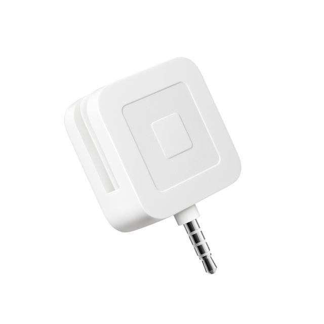

2A The square reader magstripe is a small box that is connected to your phone by using the headset jack and an app that you have to download to be able to use it. This innovation allows you to make transactions with a swipe of your card. A square reader magstripe is affordable, you can even get one for free on there website. The purpose of the square reader magstripe is to allow people to accept credit card payments. My artifact shows that the main use for the magstripe reader is to allow people to make make transaction through their phones.
2B I created this artifact by using gimp ang google. The program I used to create my artifact is gimp. It allows my use use images from google and put them together to explain what the main point of my innovation is.
2C The square reader is beneficial because you can easily go to the square reader website, make an account and get one shipped for free(2). On the other hand, this innovation is harmful when The square reader magstripe is known to be easily compromised. It has been explained that your magstripe credit card can be physically record and used again without your approval(7). The impact this has is on economy because it is really easy to afford and setup which encourages people to start small business which means people will be exchanging more money.
2D The data my innovation uses is a magnetic stripe of a credit card that holds three tracks of data, the first and second track holds the personal information of the account holder, the third track can holds any extra information(4). This data is important because each time you swipe your card on a square reader its process your personal account information to make a transaction. A data security concern is when the square reader is compromised and your credit card number can be copied and sent to a hacker to make fraudulent charges.
